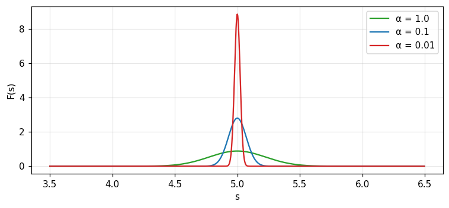
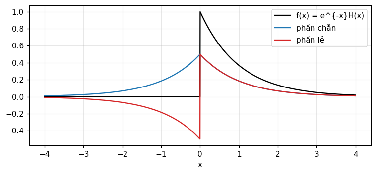
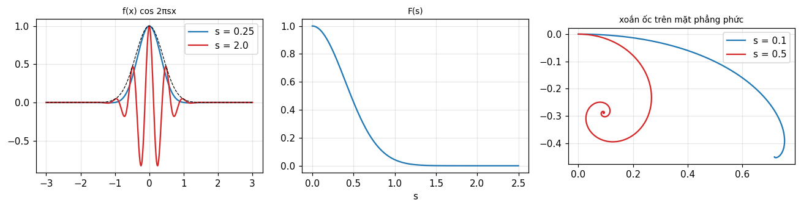

1/5 · Biến đổi Fourier và định lý tích phân Fourier
Tính tuần hoàn: hai lần biến đổi
Biến đổi F(s) thêm một lần nữa bằng cùng công thức, ta được f(-x). Với hàm chẵn ta thu lại đúng f(x), đó là tính tuần hoàn hai bước và kéo theo tính tương hỗ: nếu F là biến đổi của f thì f là biến đổi của F (tr. 5). Với hàm lẻ hoặc bất kỳ, kết quả là f(-x) (tr. 6).
Hai lần biến đổi
\mathcal F\mathcal F f=f(-x)
1/5 · Biến đổi Fourier và định lý tích phân Fourier
Thử số: hai lần biến đổi trả về f(-x)
Với một dãy 64 điểm không chẵn không lẻ, \frac1N\,\text{DFT}(\text{DFT}(v)) trùng dãy đảo v[-n] (lệch tối đa 1.8e-14) và bốn lần biến đổi trả lại đúng v (lệch 5.4e-16). Phép kiểm dùng cả FFT lẫn ma trận DFT dựng tay.
1/5 · Biến đổi Fourier và định lý tích phân Fourier
Biến đổi "trừ i" và "cộng i"
Hai lần biến đổi bằng cùng một công thức không trả đúng hàm gốc. Muốn đảo ngược, dùng dấu mũ ngược lại. Bracewell gọi F là biến đổi "trừ i" của f và f là biến đổi "cộng i" của F (tr. 6).
1/5 · Biến đổi Fourier và định lý tích phân Fourier
Định lý tích phân Fourier
Viết hai phép biến đổi liên tiếp thành một tích phân lặp ta có phát biểu quen thuộc. Tại điểm gián đoạn, vế trái phải thay bằng trung bình của hai giới hạn hai phía (tr. 6).
1/5 · Biến đổi Fourier và định lý tích phân Fourier
Thử số: tái dựng xung chữ nhật tại điểm gián đoạn
Biến đổi của \Pi(x) là \text{sinc}\,s. Cắt phép biến đổi ngược ở |s|\le S rồi tính tại x=0.5 (chỗ nhảy của \Pi): S=5 cho 0.4899, S=20 cho 0.4975, S=100 cho 0.4995, tiến về 0.5, đúng trung bình của 1 và 0. Tại x=0.25 (trong xung) được 0.9973, tại x=1 (ngoài xung) được 0.0007.
Hình 1. Biến đổi ngược của sinc cắt ở |s| ≤ S tiến về Π(x); tại chỗ nhảy x = ±0.5 mọi đường đều đi qua giá trị 0.5, trung bình của 1 và 0.
1/5 · Biến đổi Fourier và định lý tích phân Fourier
Ba hệ hằng số
Hằng số 2\pi có thể đặt trong số mũ (hệ 1), đặt vào biến (hệ 2) hoặc chia đều bằng 1/\sqrt{2\pi} (hệ 3). Khóa này giữ hệ 1 như giáo trình. Nếu f(x) và F(s) là một cặp ở hệ 1 thì f(x) và F(s/2\pi) là một cặp ở hệ 2 (tr. 6).
Hệ
F
f
1
\int f\,e^{-i2\pi xs}dx
\int F\,e^{i2\pi xs}ds
2
\int f\,e^{-isx}dx
\frac1{2\pi}\int F\,e^{isx}ds
3
\frac1{\sqrt{2\pi}}\int f\,e^{-isx}dx
\frac1{\sqrt{2\pi}}\int F\,e^{isx}ds
1/5 · Biến đổi Fourier và định lý tích phân Fourier
Ký hiệu: F(s), gạch ngang và toán tử \mathcal F
Bracewell dùng ba cách viết, mỗi cách có ưu điểm riêng. Chữ hoa F(s) hợp khi có dấu liên hợp và đạo hàm. Gạch ngang trên f gọn cho các phát biểu như định lý tích chập. Toán tử \mathcal F hợp khi viết biến đổi của một hàm cụ thể (tr. 7 đến 8). Ký hiệu \supset chỉ chiều thuận, còn \leftrightarrow dùng cho các phép biến đổi khả đảo đối xứng như cosin, Hilbert và Hartley (tr. 8).
Cặp tự biến đổi
e^{-\pi x^2}\ \supset\ e^{-\pi s^2}
1/5 · Biến đổi Fourier và định lý tích phân Fourier
Thử số: Gauss và sech tự biến đổi
Tích phân số cho biến đổi của e^{-\pi x^2} tại s=0.5 là 0.4559, đúng e^{-\pi/4}. Biến đổi của \text{sech}(\pi x) tại s=0.5 là 0.3985, đúng \text{sech}(\pi/2). Hai hàm này (cùng với \text{III}) là các hàm tự biến đổi Bracewell nêu ở bài tập 20 (tr. 23).
PHẦN 2/5
02
Điều kiện tồn tại và biến đổi trong giới hạn
Bối cảnh: Người làm mạch tin rằng mọi dạng sóng đều có phổ.
Vướng mắc: Về toán học có những hàm quen thuộc như \sin t, bước nhảy và xung lại không có biến đổi Fourier thường.
Giải pháp: Vật lý cho phép luôn bảo đảm tồn tại, và các hàm còn lại được thu nạp bằng biến đổi trong giới hạn.
Điều kiện đủ và đối ngẫu năng lượng vô hạn
Dãy Gauss điều chế và hàm suy rộng
Hàm dấu và bài tập 3
2/5 · Điều kiện tồn tại và biến đổi trong giới hạn
Vật lý cho phép là điều kiện đủ
Người làm mạch chắc chắn mọi dạng sóng đều có phổ, người thiết kế ăng-ten chắc chắn mọi ăng-ten đều có giản đồ bức xạ. Không ai tạo được dạng sóng không có phổ. Khi hàm mô tả chính xác một đại lượng vật lý, ta có thể bỏ qua câu hỏi tồn tại (Bracewell, tr. 8).
2/5 · Điều kiện tồn tại và biến đổi trong giới hạn
Ba hàm quen thuộc không có biến đổi thường
Ta hay thay đại lượng vật lý bằng một biểu thức toán gọn như \sin t, H(t) và \delta(t). Không cái nào thực sự có biến đổi Fourier, vì tích phân Fourier không hội tụ với mọi s. Về vật lý cũng không tạo được: \sin t phải bật từ vô hạn trước đó, H(t) phải giữ không đổi vô hạn lâu, \delta(t) phải vô cùng lớn trong thời gian vô cùng ngắn (tr. 8).
2/5 · Điều kiện tồn tại và biến đổi trong giới hạn
Hai điều kiện đủ
Biến đổi rồi biến đổi ngược một hàm đơn trị f(x) trả lại f(x), hoặc \tfrac12[f(x^+)+f(x^-)] tại điểm gián đoạn, với điều kiện (tr. 9):
Tích phân của |f(x)| trên toàn trục tồn tại.
Mọi điểm gián đoạn của f(x) đều hữu hạn.
Điều kiện khả tích tuyệt đối
\int_{-\infty}^{\infty}|f(x)|\,dx<\infty
2/5 · Điều kiện tồn tại và biến đổi trong giới hạn
Đối ngẫu: năng lượng vô hạn vi phạm cả hai
Trong thực tế hai điều kiện bị vi phạm khi năng lượng vô hạn. Dòng điện một chiều chảy mãi mãi có năng lượng vô hạn nên vi phạm điều kiện thứ nhất; phân bố năng lượng theo tần số khi đó dồn vô hạn vào tần số 0, vi phạm điều kiện thứ hai. Sóng điều hòa cũng vậy (tr. 9).
2/5 · Điều kiện tồn tại và biến đổi trong giới hạn
Vô số cực đại: \sin(1/x) và biến phân bị chặn
Thường có người nói hàm có vô số cực đại và cực tiểu trong một đoạn hữu hạn thì không có biến đổi, ví dụ \sin(1/x). Bracewell ghi nhận điều đó không quan trọng trong thực tế, và một số hàm như vậy vẫn có biến đổi. Điều kiện biến phân bị chặn, điều kiện Lipschitz và điều kiện Dini là các mức nới rộng khác (tr. 9).
2/5 · Điều kiện tồn tại và biến đổi trong giới hạn
Biến đổi trong giới hạn: nhân với hàm tắt dần
Hàm tuần hoàn P(x) không có biến đổi vì \int|P| không tồn tại. Nhân với e^{-\alpha x^2} (\alpha nhỏ dương) thì hàm mới có thể có biến đổi. Cho \alpha\to0, dãy hàm tiến về P(x), và dãy biến đổi tương ứng định nghĩa một hàm suy rộng. Cặp gồm hàm tuần hoàn và hàm suy rộng đó là một cặp biến đổi trong giới hạn (tr. 10).
2/5 · Điều kiện tồn tại và biến đổi trong giới hạn
Thử số: e^{-\alpha x^2}\cos(10\pi x) khi \alpha\to0
Phổ có hai đỉnh tại s=\pm5. Chiều cao đỉnh tại s=5 là 0.8862 (\alpha=1), 2.8025 (\alpha=0.1), 8.8623 (\alpha=0.01), tăng như \tfrac12\sqrt{\pi/\alpha} không có giới hạn. Độ rộng đỉnh co lại 0.2251, 0.0712, 0.0225. Diện tích mỗi đỉnh luôn là 0.5. Dãy không có giới hạn theo từng điểm nhưng tiến về cặp xung \tfrac12\delta(s-5)+\tfrac12\delta(s+5).

Hình 2. Biến đổi của e^{−αx²}cos(10πx) quanh s = 5: khi α giảm, đỉnh cao lên và hẹp lại nhưng diện tích giữ nguyên, tiến về một xung.
2/5 · Điều kiện tồn tại và biến đổi trong giới hạn
Hàm suy rộng và cặp giới hạn
Ý tưởng làm việc với thứ không phải hàm nhưng mô tả được bằng dãy hàm đã quen trong vật lý qua ký hiệu xung. Trong cặp giới hạn của hàm tuần hoàn, chỉ một thành viên là hàm suy rộng có xung. Nếu vừa xung vừa tuần hoàn thì cả hai thành viên đều là hàm suy rộng. Định nghĩa chặt chẽ được hoãn tới chương 5 và 6 (tr. 10 đến 11).
2/5 · Điều kiện tồn tại và biến đổi trong giới hạn
Thử số và bài tập 3: hàm dấu
Bài tập 3 cho biết biến đổi trong giới hạn của \text{sgn}\,x là (i\pi s)^{-1}. Nhân với e^{-\alpha|x|}: phần ảo của biến đổi tại s=0.5 là -0.636 (\alpha=0.1), -0.6366 (\alpha=0.01), -0.6366 (\alpha=0.001), tiến về -0.6366 =-1/(\pi s). Tích phân số và công thức đóng trùng nhau ở mọi \alpha.
Bối cảnh: Lập luận đối xứng cho thấy nhiều tích phân triệt tiêu mà không cần tính.
Vướng mắc: Nhưng cần tỉnh táo để khai thác đủ đối xứng, cả ở hàm lẫn ở biến đổi của nó.
Giải pháp: Tách thành phần chẵn và lẻ, rồi đọc bảng đối xứng thực, ảo, chẵn, lẻ, Hermitian.
Tách chẵn lẻ duy nhất và phụ thuộc gốc
Bảng đối xứng và kiểm số
Hàm Hermitian
3/5 · Chẵn, lẻ và đối xứng
Hàm chẵn và hàm lẻ
Hàm E(x) mà E(-x)=E(x) là đối xứng hay chẵn; hàm O(x) mà O(-x)=-O(x) là phản đối xứng hay lẻ. Tổng của hàm chẵn và hàm lẻ nói chung không chẵn cũng không lẻ (Bracewell, tr. 11).
3/5 · Chẵn, lẻ và đối xứng
Tách duy nhất thành phần chẵn và lẻ
Mọi hàm tách được duy nhất thành phần chẵn và lẻ. Chứng minh: nếu f=E_1+O_1=E_2+O_2 thì E_1-E_2=O_2-O_1 vừa chẵn vừa lẻ nên bằng 0 (tr. 11). Phần chẵn là trung bình của hàm và ảnh phản chiếu qua trục đứng, phần lẻ là trung bình của hàm và ảnh phản chiếu âm (tr. 12).
Với e^{-x}H(x): phần chẵn là \tfrac12e^{-|x|}, phần lẻ là \tfrac12\text{sgn}(x)e^{-|x|}. Tại x=1 cả hai bằng 0.1839; tại x=-1 phần chẵn vẫn 0.1839 còn phần lẻ là -0.1839. Với e^{x}: phần chẵn là \cosh x (1.5431 tại x=1) và phần lẻ là \sinh x (1.1752). Đây là bài tập 6 của Bracewell.

Hình 3. Hàm nhân quả e^{−x}H(x) (đen) tách duy nhất thành phần chẵn (xanh) và phần lẻ (đỏ); cộng lại cho ra hàm ban đầu.
3/5 · Chẵn, lẻ và đối xứng
Phụ thuộc vào gốc tọa độ
Việc tách chẵn lẻ đổi theo gốc của x. Hàm \cos x hoàn toàn chẵn, nhưng dịch gốc một phần tư chu kỳ thì thành \sin x hoàn toàn lẻ (tr. 12). Vì thế "chẵn hay lẻ" luôn phải nói kèm gốc.
3/5 · Chẵn, lẻ và đối xứng
Bài tập 17: tổng năng lượng chẵn và lẻ bất biến
Tổng \int|o|^2dx+\int|e|^2dx không đổi khi dịch gốc, và bằng \int|f|^2dx vì tích chéo chẵn nhân lẻ tích phân bằng 0. Với f=e^{-x^2} hằng số đó là \sqrt{\pi/2} = 1.2533. Phần năng lượng chẵn là 1 khi a=0, 0.8033 khi a=0.5, 0.5677 khi a=1, 0.5002 khi a=2 (dịch xa gốc thì chia đều).
3/5 · Chẵn, lẻ và đối xứng
Ý nghĩa: biến đổi của phần chẵn và lẻ
Viết f=E+O với E,O có thể phức. Biến đổi Fourier rút về hai tích phân cosin và sin. Từ đó hàm chẵn có biến đổi chẵn, hàm lẻ có biến đổi lẻ (tr. 13).
Bảng ở trang 13 đến 14 cho biết dạng đối xứng của F(s) theo dạng đối xứng của f(x) (hình 2.5, tr. 15):
f(x)
F(s)
thực và chẵn
thực và chẵn
thực và lẻ
ảo và lẻ
ảo và chẵn
ảo và chẵn
ảo và lẻ
thực và lẻ
thực và không đối xứng
Hermitian
thực chẵn cộng ảo lẻ (Hermitian)
thực
thực lẻ cộng ảo chẵn (phản Hermitian)
ảo
3/5 · Chẵn, lẻ và đối xứng
Thử số: kiểm bảng bằng DFT
Với dãy ngẫu nhiên có đối xứng dựng sẵn, DFT thoả mãn 6 trên 6 dòng của bảng. Hệ quả kỹ thuật: tín hiệu thực có phổ Hermitian nên chỉ cần lưu nửa phổ. Tín hiệu thực 1000 mẫu có 1000 hệ số FFT nhưng chỉ 501 hệ số độc lập, mà năng lượng 625 vẫn tính lại được đủ từ nửa phổ.
PHẦN 4/5
04
Liên hợp phức, biến đổi cosin và sin
Bối cảnh: Bảng đối xứng chỉ cho biết dạng, chưa cho quan hệ chính xác giữa f, f^* và F.
Vướng mắc: Với hàm chỉ xác định ở nửa trục dương, biến đổi Fourier thường được thay bằng biến đổi cosin hoặc sin.
Giải pháp: Liên hợp phức cho tám quan hệ gọn, và biến đổi cosin và sin là biến đổi của các mở rộng chẵn và lẻ.
Biến đổi của liên hợp phức và bảng quan hệ
Biến đổi cosin và sin tự nghịch đảo
Hàm nhân quả
4/5 · Liên hợp phức, biến đổi cosin và sin
Biến đổi của liên hợp phức
Biến đổi Fourier của f^*(x) là F^*(-s), tức ảnh phản chiếu của liên hợp biến đổi. Với f thực thì biến đổi của f^*=f là F(s), suy ra F(s)=F^*(-s) (Bracewell, tr. 14).
Liên hợp phức
f^*(x)\ \supset\ F^*(-s)
4/5 · Liên hợp phức, biến đổi cosin và sin
Hàm Hermitian
Hàm có phần thực chẵn và phần ảo lẻ gọi là Hermitian, định nghĩa gọn bằng f(x)=f^*(-x). Biến đổi của nó là thực. Chứng minh: f=E+O+iE'+iO' thì f^*(-x)=E-O-iE'+iO'; đòi f=f^*(-x) buộc O=0 và E'=0, còn f=E+iO' (tr. 14).
Hermitian
f(x)=f^*(-x)\;\Longrightarrow\;F(s)\ \text{real}
4/5 · Liên hợp phức, biến đổi cosin và sin
Bảng quan hệ tám dòng
Bracewell tổng hợp các cặp liên quan (tr. 16):
f(x)
F(s)
f(x)
F(s)
f^*(x)
F^*(-s)
f^*(-x)
F^*(s)
f(-x)
F(-s)
2\,\text{Re}\,f
F(s)+F^*(-s)
2i\,\text{Im}\,f
F(s)-F^*(-s)
f(x)+f^*(-x)
2\,\text{Re}\,F
f(x)-f^*(-x)
2i\,\text{Im}\,F
4/5 · Liên hợp phức, biến đổi cosin và sin
Thử số: kiểm bảng bằng DFT
Với dãy phức ngẫu nhiên, 7 trên 7 quan hệ không tầm thường trong bảng đều đúng tới sai số làm tròn, mỗi quan hệ được kiểm bằng phép so sánh trực tiếp hai vế qua DFT.
4/5 · Liên hợp phức, biến đổi cosin và sin
Biến đổi cosin
Biến đổi cosin của f(x) xác định cho s>0, chỉ dùng f ở nửa dương. Nó trùng biến đổi Fourier nếu f chẵn. Điều đặc biệt: phép thuận và ngược có cùng công thức nên biến đổi cosin tự nghịch đảo (tr. 16 đến 17).
Biến đổi sin cũng tự nghịch đảo. i lần phần lẻ của biến đổi Fourier của f bằng biến đổi sin của phần lẻ của f khi s>0 (tr. 17). Nhờ đó tra bảng Fourier của hàm chẵn và lẻ ở chương 22 cho ra bảng cosin và sin.
Nếu f(x)=0 với x<0 thì F(s)=\tfrac12F_c(s)-\tfrac12iF_s(s) (tr. 17). Với f=e^{-x}H(x) tại s=0.2: F_c=0.7755, F_s=0.9745, nên F=0.3877+(-0.4872)\,i, trùng 1/(1+i2\pi s). Biến đổi Fourier của phần mở rộng chẵn e^{-|x|} cũng cho 0.7755, đúng F_c; và biến đổi cosin ngược thu lại f(1)=0.3679.
4/5 · Liên hợp phức, biến đổi cosin và sin
Cẩn thận khi đọc bảng cosin và sin
Các bảng lớn thường định nghĩa g(\omega)=\int_0^\infty f(x)\sin\omega x\,dx, tức dùng tần số góc và không có hệ số 2. Bracewell lưu ý một hằng số bị "giấu" sẽ trở lại khi đảo phép biến đổi (tr. 17). Trước khi dùng bảng ngoài, hãy đối chiếu định nghĩa và hệ số 2\pi.
PHẦN 5/5
05
Diễn giải tích phân Fourier bằng hình
Bối cảnh: Người quen với phân tích Fourier thường hình dung tích phân Fourier chứ không đọc công thức.
Vướng mắc: Có ba cách hình dung và mỗi cách trả lời một câu hỏi khác nhau về cùng một tích phân.
Giải pháp: Diện tích dưới f\cos, cosinusoid theo s, và xoắn ốc trên mặt phẳng phức, cùng thư mục và bài tập của chương.
Ba hình và số đo kèm theo
Ứng dụng của giản đồ xoắn ốc
Thư mục và bài tập
5/5 · Diễn giải tích phân Fourier bằng hình
Hình thứ nhất: diện tích dưới f(x)\cos2\pi sx
Với f(x) cho trước, hình dung f(x)\cos2\pi sx là dao động nằm trong đường bao \pm f(x). Hai lần diện tích phía dưới (với x>0) là F_c(s). Tần số s là số chu kỳ trên một đơn vị của x (Bracewell, tr. 18).
5/5 · Diễn giải tích phân Fourier bằng hình
Thử số: diện tích thấp và cao tần
Với f=e^{-\pi x^2}: tại s=0.25 diện tích (chính là F) là 0.8217, còn tại s=2 chỉ 3.49e-06, gần như bằng 0 vì dao động nhanh làm các nửa chu kỳ dương và âm triệt tiêu nhau. Tại s=0, diện tích là \int f.

Hình 4. Trái: f cos 2πsx ở tần số thấp (xanh) giữ diện tích, ở tần số cao (đỏ) tự triệt tiêu. Giữa: F(s) của Gauss. Phải: xoắn ốc của e^{−x}H(x) trên mặt phẳng phức.
Ngược lại, coi f(x)\cos2\pi xs\,dx là một cosinusoid theo s với biên độ f(x)\,dx và tần số x. Cộng các đường như vậy cho mọi x ta được F_c(s) (hình 2.8, tr. 18 đến 19). Đây là cách nhìn quen thuộc khi cộng đồ thị các cosin có tần số tăng dần trong chuỗi Fourier.
5/5 · Diễn giải tích phân Fourier bằng hình
Phân tích và tổng hợp là cùng một phép làm
Mỗi cách nhìn có hai mặt: phân tích hàm thành thành phần, hoặc tổng hợp hàm từ thành phần. Việc phân tích hay tổng hợp đều làm cùng một việc phản ánh tính tương hỗ của biến đổi Fourier. Mặt f(x)\cos2\pi sx cắt theo hai cách, theo s cố định hoặc theo x cố định (tr. 19 đến 20, hình 2.9).
5/5 · Diễn giải tích phân Fourier bằng hình
Hình thứ ba: xoắn ốc trên mặt phẳng phức
Cố định s. Vector f(x)\,dx bị quay góc 2\pi sx bởi \exp(-i2\pi sx). Khi x\to\pm\infty, biên độ co lại và góc quay tiếp tục nên tích phân xoắn vào hai điểm giới hạn A và B, và vector AB là F(s). Với s lớn, xoắn ốc cuộn nhanh hơn (hình 2.10, tr. 20).
5/5 · Diễn giải tích phân Fourier bằng hình
Thử số: xoắn ốc của e^{-x}H(x)
Tích phân tích lũy \int_0^Xe^{-x}e^{-i2\pi sx}dx xoắn về 1/(1+i2\pi s). Độ dài vector giới hạn là 0.8467 khi s=0.1 và chỉ 0.3033 khi s=0.5: s lớn cuộn nhanh hơn và |F| nhỏ hơn. Tích phân số tích lũy trùng công thức đóng.
Hình 5. Xoắn ốc của tích phân tích lũy ∫₀^X e^{−x}e^{−i2πsx}dx. Với s = 0.5 (đỏ) đường cuộn nhanh và điểm cuối gần gốc hơn so với s = 0.1 (xanh).
5/5 · Diễn giải tích phân Fourier bằng hình
Giản đồ xoắn ốc trong quang học và vô tuyến
Loại giản đồ này gần với xoắn ốc Cornu, quen thuộc trong nhiễu xạ quang học. Nó là công cụ hữu ích cho tư duy định tính lẫn tính số trong quang học và ăng-ten, xuất hiện khi sóng vô tuyến lan truyền, và tóm gọn cách các tiếng vọng vô tuyến phản xạ từ vệt sao băng ion hóa hình thành (tr. 20). Chương 15 sẽ dùng lại.
5/5 · Diễn giải tích phân Fourier bằng hình
Thư mục của chương
Chương liệt kê các sách chuẩn về tích phân Fourier và các sách hướng kỹ thuật điện: Wiener (1933), Titchmarsh (1937), Bochner (1948), Bochner và Chandrasekharan (1949), Lighthill (1958), Papoulis (1962), Champeney (1973) và nhiều sách khác. Cũng có các bảng tích phân Fourier như Campbell và Foster (1948), Erdélyi (1954). Bảng biến đổi Laplace một phía chỉ cho biến đổi Fourier của hàm bằng 0 với đối số âm (tr. 21 đến 22).
5/5 · Diễn giải tích phân Fourier bằng hình
Bài tập chương 2 và cách khóa dùng chúng
Chương có 21 bài tập (tr. 22 đến 23). Notebook của module này kiểm số cho một số bài: bài 3 (biến đổi trong giới hạn của \text{sgn}\,x), bài 6 (phần chẵn và lẻ), bài 10 (bốn lần biến đổi trả lại f), bài 13 và 14 (đối xứng), bài 17 (hằng số năng lượng), bài 19 (xoắn ốc), bài 20 (hàm tự biến đổi). Lời giải các bài chọn nằm ở chương 21 của sách.
Liên hệ chéo
Hàm đặc trưng trong Barkat (mục 1.4.2) chính là một biến đổi Fourier của mật độ xác suất; module 10 ghép hai sách ở điểm này.
TỔNG KẾT
Điều cần mang theo
Hai lần biến đổi bằng cùng công thức trả về f(-x); muốn đảo ngược dùng biến đổi "cộng i".
Tại điểm gián đoạn, biến đổi ngược trả về trung bình hai giới hạn.
Điều kiện đủ: \int|f| tồn tại và gián đoạn hữu hạn; các hàm còn lại dùng biến đổi trong giới hạn.
Mọi hàm tách duy nhất thành phần chẵn và lẻ, và bảng đối xứng cho dạng của phổ.
Tín hiệu thực có phổ Hermitian: chỉ cần nửa phổ.
Ba hình: diện tích dưới f\cos, cosinusoid theo s, xoắn ốc trên mặt phẳng phức.
📜 Bối cảnh lý thuyết & lịch sử
Chương 2 nói rõ ngay từ đầu rằng phần lớn nội dung được nêu không chứng minh, vì chứng minh dài và là phần chính của các giáo trình chuỗi Fourier cổ điển (tr. 5). Bracewell muốn lấy công thức và điều kiện đã biết làm điểm xuất phát cho bàn về ứng dụng.
Các điều kiện tồn tại gắn với nhiều tên tuổi: khái niệm biến phân bị chặn, điều kiện Lipschitz và điều kiện Dini xuất hiện như những mức nới rộng khác nhau (tr. 9). Định lý tích phân Fourier có mặt trong các giáo trình chuẩn của Wiener (1933), Titchmarsh (1937) và Bochner (1948) mà chương liệt kê ở thư mục (tr. 21).
Hình xoắn ốc trên mặt phẳng phức gần với xoắn ốc Cornu của quang học và được dùng cho tiếng vọng vô tuyến từ vệt sao băng (tr. 20).
🔎 Case study thực tế
Lưu một nửa phổ. Một cảm biến ghi tín hiệu thực 1000 mẫu (tổng hai sóng hình sin). FFT đầy đủ có 1000 hệ số phức, nhưng nhờ đối xứng Hermitian của bảng chương 2 chỉ cần 501 hệ số (rfft), tiết kiệm gần một nửa bộ nhớ và thời gian. Năng lượng 625 của tín hiệu tính lại đủ từ nửa phổ (cộng đôi các ô trung gian), nên không mất thông tin.
Cùng một nguyên lý giải thích vì sao phổ biên độ của tín hiệu thực chẵn và phổ pha lẻ, và vì sao ở tiếp theo ta chỉ vẽ tần số dương.
Notebook tự sinh dữ liệu bằng mã, không cần tải file ngoài. Mọi con số trên trang này được in ra từ notebook và đối chiếu bằng hai phương pháp độc lập.
⚠️ Những bẫy diễn giải sai
"Hai lần biến đổi luôn trả về f(x)."
Chỉ đúng với hàm chẵn. Nói chung kết quả là f(-x); muốn f(x) phải dùng biến đổi "cộng i" hoặc làm bốn lần (tr. 5 đến 6).
"Tích phân Fourier tại điểm gián đoạn cho giá trị của hàm."
Nó cho trung bình hai giới hạn hai phía: 0.4995 tại chỗ nhảy của \Pi thay vì 1 hoặc 0.
"Dãy biến đổi của hàm điều chế phải hội tụ từng điểm."
Không: đỉnh tại s=5 tăng tới 8.8623 và hơn nữa khi \alpha\to0. Chỉ diện tích (0.5) ổn định, và dãy định nghĩa một hàm suy rộng (tr. 10).
"Chẵn hay lẻ là tính chất cố hữu của hàm."
Nó phụ thuộc gốc tọa độ: \cos x chẵn, nhưng dịch gốc thì thành \sin x lẻ (tr. 12). Tổng năng lượng chẵn và lẻ (1.2533 với e^{-x^2}) mới là bất biến.
"Bảng cosin và sin từ sách khác dùng ngay được."
Định nghĩa có thể khác hệ số 2 và 2\pi; hãy đối chiếu trước (tr. 17).
✅ Quiz tự kiểm tra
Bấm một đáp án để chấm ngay và xem giải thích. Kết quả không được lưu.
Nguồn tham khảo
R. N. Bracewell, The Fourier Transform and Its Applications, 3rd ed., McGraw-Hill, 2000, chương 2 (tr. 5 đến 23).
M. Barkat, Signal Detection and Estimation, 2nd ed., Artech House, 2005, mục 1.4.2 (hàm đặc trưng), chỉ dẫn tới ở phần liên hệ chéo.
Nội dung được viết với sự hỗ trợ của AI (Claude), rồi được kiểm lại. Mọi con số do notebook Jupyter tính ra và đối chiếu bằng hai phương pháp độc lập; số trang trích dẫn lấy từ văn bản OCR của hai giáo trình gốc. Vẫn có thể còn sai sót, mong bạn báo lại.